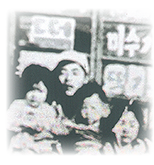
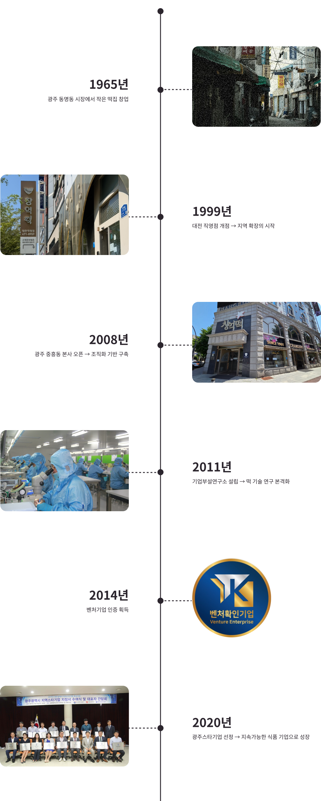
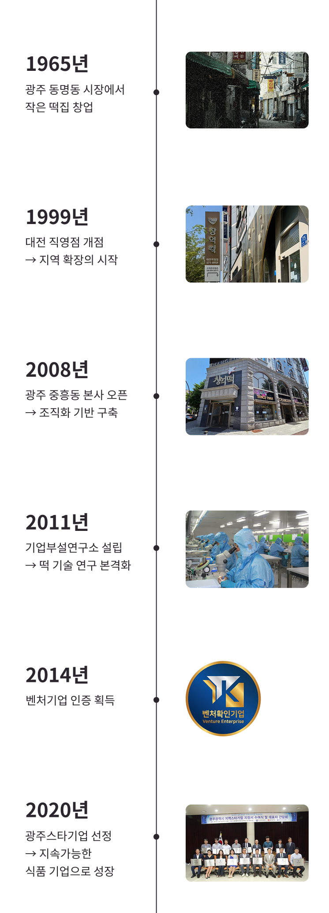

Since 1965
"좋은 재료에 남보다 더 많은 돈을 써라.
내 가족, 내 아이가 먹을 음식이고
이웃이 함께 나눌 음식이니까.
이윤보다 정(情)을 나눌 때,
비로소 음식이 좋은 음식이 된다."
광주에서 시작된 마음, 창억
창억떡은 1965년, 광주 동명동의 도내기 시장 한켠에서 시작되었습니다. 창업주는 매일 새벽, 직접 떡을 빚으며 ‘가족이 먹을 수 있을 만큼 정직한 재료로 만들자’는 신념을 지켜왔습니다.
창억의 기술력 →
창억이 지켜가는
4가지 기준
떡루랄라
창억떡 홍보 콘텐츠 영상입니다.
창억의 성장 이야기
작은 떡집에서 전국 브랜드로, 반세기 동안 걸어온 길
시장의 작은 가게로 시작했지만, 창억떡은 60년 넘게 ‘정직한 떡’ 하나만을 바라보며 성장해왔습니다.
지금은 오프라인 매장, 온라인몰, 홈쇼핑, 기업 납품까지 다양한 유통채널을 통해
더 많은 사람들이 창억떡을 경험할 수 있게 되었습니다.

